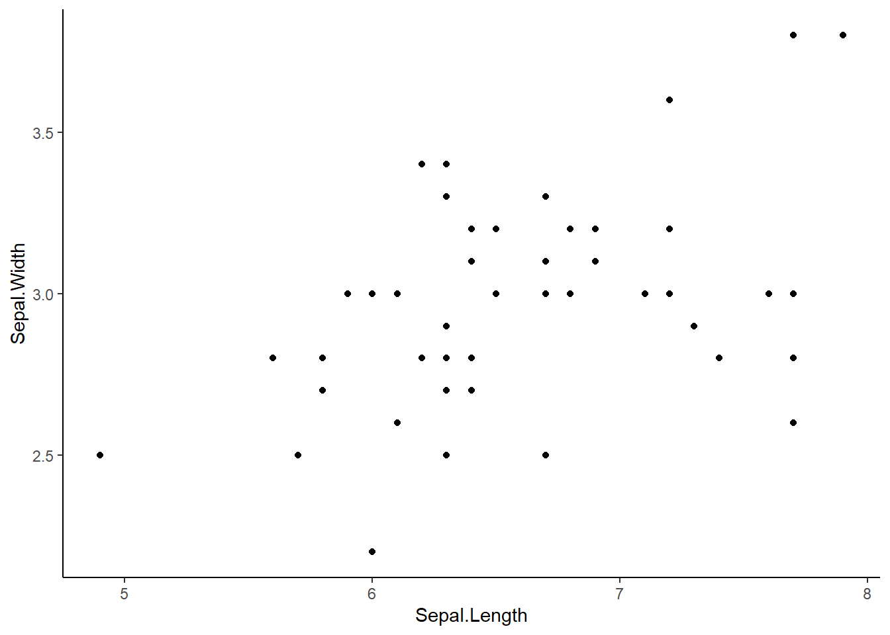
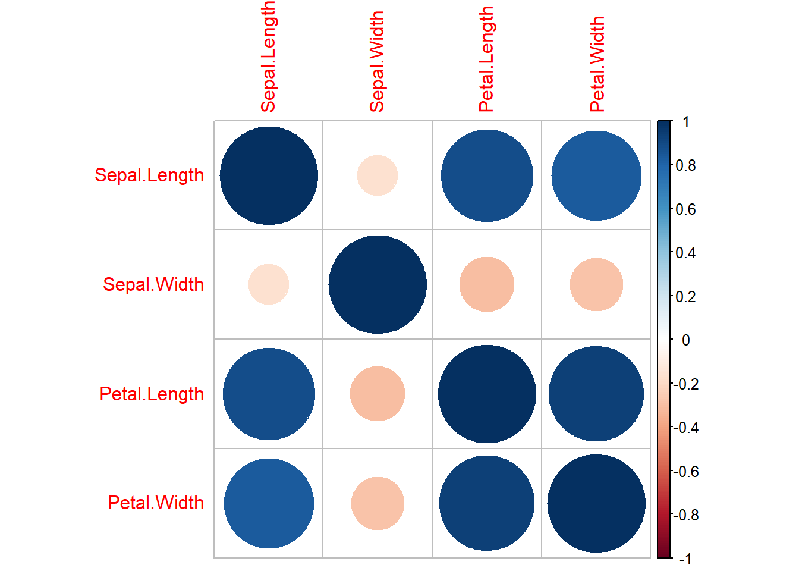

library(tidyverse)
library(see)
library(car)
library(patchwork)
library(ggsci)
library(ggridges)
library(performance)
library(Hmisc) #for correlation matrix
library(corrplot)#to visualize correlation matrices
library(car) #contains some statistical tests we need to assess assumptionsCorrelation and Chi Square
Load packages
Correlation between numerical variables
Often in science, it can be useful to assess the correlation between numerical variables (how does a change in one variable impact a change in another?). We may use these correlations to tell us which variables to include or exclude from more complex models and we can also use these correlations to understand relationships between variables and thus, possibly search for mechanisms to explain said relationships.
Correlation Coefficients
A correlation coefficient (r) tells us the relationship (strength and direction) between two variables. These coefficients can be positive or negative and will range from 0 to 1 (or negative 1). Values nearer to 1 (or negative 1) indicate stronger correlations and values closer to 0 indicate weaker correlations
Let’s try out some correlations using the iris data.
Is there a correlation between sepal length and sepal width? Let’s test each species separately for now.
Step 1: make a scatterplot
#filter down to a single species
virg<-iris %>%
filter(Species=='virginica')
#make a plot
ggplot(virg, aes(x=Sepal.Length, y=Sepal.Width))+
geom_point()+
theme_classic()
Step 2: Calculate a correlation coeficient (r)
cor(virg$Sepal.Length, virg$Sepal.Width)[1] 0.4572278This value (r=0.45) positive and middle of the road/strong. This tells us that some correlation likely exists.
Step 3: Do a hypothesis test on the correlation Spearman’s Test
H0: The correlation between these two variables is 0
Ha: The correlation != 0
cor.test(virg$Sepal.Length, virg$Sepal.Width, method="spearman")Warning in cor.test.default(virg$Sepal.Length, virg$Sepal.Width, method =
"spearman"): Cannot compute exact p-value with ties
Spearman's rank correlation rho
data: virg$Sepal.Length and virg$Sepal.Width
S = 11943, p-value = 0.002011
alternative hypothesis: true rho is not equal to 0
sample estimates:
rho
0.4265165 The above output gives us the r value (cor=0.457) AND a p-value for a hypothesis test that the two correlations do not differ. If p<0.05 we can reject our H0 and say that the correlation differs from 0. Here, p=0.0008 so we can reject H0 and suggest that we have a significant positive correlation! Rho is similar to r and is this case our correlation coefficient (0.42). It is slightly lower than the r we calculated above.
Multiple Correlations
iris2<-iris[,c(1:4)] #filter iris so we only have the numerical columns!
iris_cor<-cor(iris2, method="spearman")
iris_cor Sepal.Length Sepal.Width Petal.Length Petal.Width
Sepal.Length 1.0000000 -0.1667777 0.8818981 0.8342888
Sepal.Width -0.1667777 1.0000000 -0.3096351 -0.2890317
Petal.Length 0.8818981 -0.3096351 1.0000000 0.9376668
Petal.Width 0.8342888 -0.2890317 0.9376668 1.0000000The above correlation matrix shows r (correlation coefficient) not p values!
Getting r and p values
mydata.rcorr = rcorr(as.matrix(iris2))
mydata.rcorr #top matrix = r, bottom matrix = p Sepal.Length Sepal.Width Petal.Length Petal.Width
Sepal.Length 1.00 -0.12 0.87 0.82
Sepal.Width -0.12 1.00 -0.43 -0.37
Petal.Length 0.87 -0.43 1.00 0.96
Petal.Width 0.82 -0.37 0.96 1.00
n= 150
P
Sepal.Length Sepal.Width Petal.Length Petal.Width
Sepal.Length 0.1519 0.0000 0.0000
Sepal.Width 0.1519 0.0000 0.0000
Petal.Length 0.0000 0.0000 0.0000
Petal.Width 0.0000 0.0000 0.0000 Plotting our correlations
corrplot(iris_cor)
Categorical correlations (Chi-Square)
A Chi-square test is a statistical test used to determine if two categorical variables have a significant correlation between them. These two variables should be selected from the same population. An example - Is the color of a thing red or green? Is the answer to a simple question yes or no?
Data format Technically, a chi-square test is done on data that are in a contingency table (contains columns (variables) in which numbers represent counts. For example, here is a contingency table of household chore data (exciting)
chore <- read.delim("http://www.sthda.com/sthda/RDoc/data/housetasks.txt", row.names=1)
chore Wife Alternating Husband Jointly
Laundry 156 14 2 4
Main_meal 124 20 5 4
Dinner 77 11 7 13
Breakfeast 82 36 15 7
Tidying 53 11 1 57
Dishes 32 24 4 53
Shopping 33 23 9 55
Official 12 46 23 15
Driving 10 51 75 3
Finances 13 13 21 66
Insurance 8 1 53 77
Repairs 0 3 160 2
Holidays 0 1 6 153H0 = The row and column data of the contingency table are independent (no relationship) Ha= Row and column variables are dependent (there is a relationship between them)
The test
chorechi<-chisq.test(chore)
chorechi
Pearson's Chi-squared test
data: chore
X-squared = 1944.5, df = 36, p-value < 2.2e-16This result demonstrates that there is a significant association between the columns and rows in the data (they are dependent).
A second example
Let’s try to assess correlation between two categorical variables in a dataframe we know! We will use mtcars
head(mtcars) mpg cyl disp hp drat wt qsec vs am gear carb
Mazda RX4 21.0 6 160 110 3.90 2.620 16.46 0 1 4 4
Mazda RX4 Wag 21.0 6 160 110 3.90 2.875 17.02 0 1 4 4
Datsun 710 22.8 4 108 93 3.85 2.320 18.61 1 1 4 1
Hornet 4 Drive 21.4 6 258 110 3.08 3.215 19.44 1 0 3 1
Hornet Sportabout 18.7 8 360 175 3.15 3.440 17.02 0 0 3 2
Valiant 18.1 6 225 105 2.76 3.460 20.22 1 0 3 1#make a contingency table
cartab<-table(mtcars$carb, mtcars$cyl)
chisq.test(cartab)Warning in chisq.test(cartab): Chi-squared approximation may be incorrect
Pearson's Chi-squared test
data: cartab
X-squared = 24.389, df = 10, p-value = 0.006632#note that we don't NEED to make the table. We can just do this
chisq.test(mtcars$carb, mtcars$cyl)Warning in chisq.test(mtcars$carb, mtcars$cyl): Chi-squared approximation may
be incorrect
Pearson's Chi-squared test
data: mtcars$carb and mtcars$cyl
X-squared = 24.389, df = 10, p-value = 0.006632Both tests above are the same (just two options for you). We see that p<0.05, thus we have evidence to reject H0 and suggest that carb and cyl are dependent / correlated.